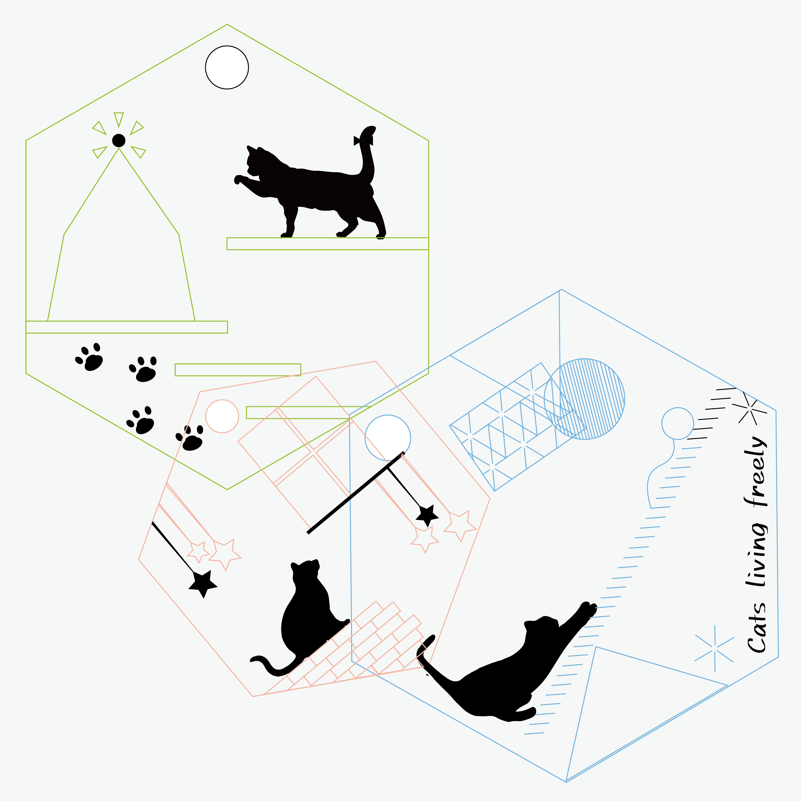

Accessory
2021
Illustrator / laser cutter

個人作品「猫のアクセサリー」
レーザーカッターを使用して重ね方によって見え方が変わるアクセサリーを制作した。異なったデザインの3枚のいたをそれぞれ重ね合わせることにより、小窓から見えるデザインが変わりアクセサリーとしてはもちろんのこと視覚的にも飽きずに楽しめるものを制作した。特に表側の猫が小窓に映った猫を見ているようなデザインになるよう意識して制作した。